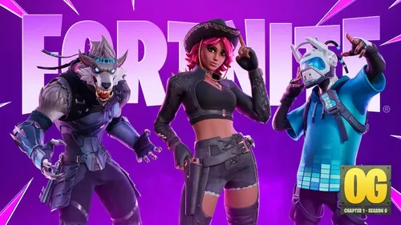
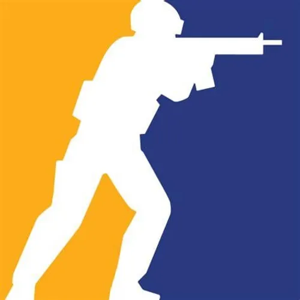
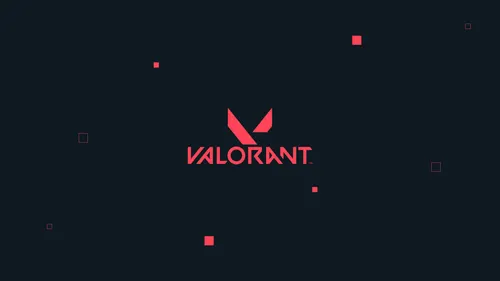

The Last of Us Part 2
Release & Platform
Datum: 19 Juni 2020
Platform: PS5, PC, Xbox series
The Last of Us wordt mede door de uitmuntende storytelling en gameplay als een van de beste games
ooit
gemaakt gezien. In de remake belooft Naugthy Dog meer dan alleen een audiovisueel likje verf. Zo
maakt
de game
gebruik van de DualSence’s haptics, krijgt de AI een upgrade en zijn er meer dan 60
toegankelijkheidsopties. En
voor de sadomasochisten onder ons: er komt ook een permadeath-modus.
Fortnite

Release & Platform
Datum: 25 Juli 2017
Platform: pc, PS5, Xbox Series X/S
Fortnite is een populaire online videogame ontwikkeld door Epic Games. Het werd uitgebracht in 2017 en bestaat uit meerdere spelmodi, waarvan Fortnite: Battle Royale de bekendste is. In deze modus strijden tot 100 spelers tegen elkaar op een eiland, waarbij de laatste overlevende wint. Spelers verzamelen wapens, materialen en bouwen structuren om zichzelf te verdedigen of strategisch voordeel te behalen.
Naast Battle Royale zijn er ook andere modi zoals Save the World (een coöperatieve PvE-modus tegen zombies) en Creative, waarin spelers hun eigen werelden en minigames kunnen bouwen. Fortnite is bekend om zijn kleurrijke graphics, regelmatige updates, samenwerkingen met bekende merken en artiesten, en het gebruik van dansjes en emotes.
Fc26
Release & Platform
Datum: 26 September 2025
Platform: Pc, Ps5, Xbox series
EA Sports FC 26 is het nieuwste voetbalspel van EA Sports en de opvolger van de bekende FIFA-serie. De game komt uit op 26 september 2025, met vroege toegang vanaf 19 september voor Ultimate Edition-spelers. FC 26 biedt realistischere animaties, verbeterde gameplay en twee speelstijlen: Competitive en Authentic. Het spel bevat opnieuw honderden officiële teams, competities en spelers, en is beschikbaar op alle grote platformen, waaronder PlayStation, Xbox, PC en Nintendo Switch. FC 26 belooft de meest complete voetbalervaring tot nu toe te worden.
Cs2

Release & Platform
Datum: 27 September 2023
Platform: pc,
Counter-Strike 2 is een remaster van CS:GO, gebouwd op de nieuwe Source 2-engine. Het biedt verbeterde graphics, vernieuwde klassieke maps en een nieuw systeem voor rookgranaten dat reageert op de omgeving. Daarnaast is het spel geoptimaliseerd voor hogere prestaties en heeft het een vernieuwd matchmaking-systeem.
De game biedt verschillende spelmodi, waaronder de klassieke bomb- en hostage-modi, en is volledig gratis te spelen via Steam. Het vervangt CS:GO volledig, maar spelers kunnen via Steam nog wel toegang krijgen tot oudere versies via community-servers.
Valorant

Release & Platform
Datum: 2 Juni 2020
Platform: PS5, Pc, Xbox series
In Valorant spelen teams van vijf spelers tegen elkaar in een combinatie van schieten en strategie. Elke speler kiest een unieke “Agent” met speciale vaardigheden die tactisch ingezet worden om het spel te winnen. De game combineert elementen van klassieke shooters met hero-based gameplay en focust sterk op teamwork en precisie.
Wil je meer lezen? Ga naar:
www.eurogamer.nl